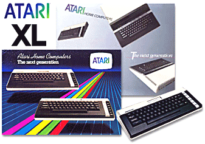
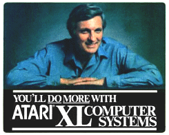

|

The Atari XL (eXtended Line)
range would replace the aging 400 and 800 computer systems. The
first new XL system to launch was the 1200XL in 1983, but it only saw a
North American roll-out. The computer was plagued by problems,
noticeably in its "fuzzy" video output and the lack of backward
compatibility with certain software and hardware. Most frustrating
for a new computer was the lack of any expansion options, as the new
unit was totally closed with no access to the system bus and no memory
expansion options.
Atari was also having other problems, which
put additional pressure on the computer division and their senior
managers. With the company already loosing money, the failure of
the 1200XL had to be rectified quickly, and through the New York and
Sunnyvale offices, new systems were hastily revised. Back from the
drawing board, the new systems were revealed in late 1983 as the low-end
600XL, and the higher-end 800XL. A 1400XL and 1450XLD were also
planned for release shortly after, in early 1984.
The 600XL had 16Kb of RAM (expandable to
64Kb with the 1064 Expansion module) and the 800XL came with 64Kb as
standard and a slightly larger case. Both machines had the same
functionality, and were better received by the consumer than the
troublesome 1200XL. The XL line had a shaky start, but soon
recovered, as the new 600XL and 800XL began rolling off the production
lines and prepared for sale outside the U.S., unlike the 1200XL.

The software compatibility problems were
largely taken care of, and the cartridge slot had been redesigned and
replaced to the top of the case, solving the physical cartridge slot
issues on the 1200XL. The 600XL and 800XL retained the advance
styling and design of the 1200XL, probably as much for cost reasons than
anything else.
From a users perspective, the 600XL and
800XL were simply replacements for the 400 and 800, and that was
basically true. So, what was so new about them? The answer
is "not a lot", and although internal components had been revised, these
were the "bread and butter" line for the Atari computer division.
What would really show off the new XL line would be the promised 1400XL
and 1450XLD computers.
The 1400XL had, in addition to the standard
functionality of the 600XL and 800XL; a fully functional speech
synthesiser, a built-in 300 baud modem and additional programmable
function keys. The XLD version would have the addition of a
double-sided double density 5.25" disk drive. Unfortunately, only
a small number of 1450XLD's were manufactured, and the 1400XL was
cancelled completely. Even the proposed 1600XL featuring IBM
compatibility would never see the light of day.
The XL line was cancelled in its entirety in
late 1984 after the company was sold to Jack Tramiel. It's
replacement would be the XE range which would launch in 1985.
|